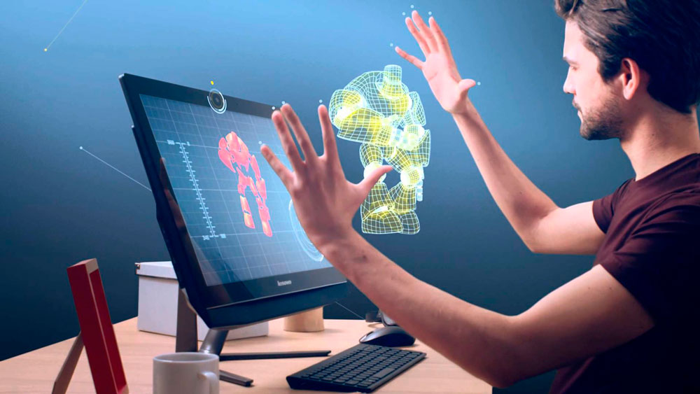

El propósito de esta página web es que las personas puedan usar todos los dispositivos que soporten este sitio web más que sea usado con el fin de diversión o solo para obtener información de diversos temas sino como una herramienta para que las personas puedan adquirir conocimientos haciendo uso de los diversos métodos como crear una interfaz amigable para que la experiencia al navegar en el sitio sea algo agradable para los usuarios.
Interfaz de Usuario
La interfaz de usuario es el medio que nos permite poder interactuar con los distintos artefactos electrónicos como lo son computadores, portátiles, teléfonos inteligentes, tabletas y muchos otros dispositivos que hacen parte de nuestras vidas.
De una manera más fácil de explicar podemos decir que la interfaz de usuario es la forma como el usuario interactúa con un dispositivo.
Hay tres tipos de interfaz de usuario
• Software
• Hardware
• Software-hardware
Corrales, J.A (2 de agosto 2019). Interfaz de usuario o UI: ¿qué es y cuáles son sus características. https://rockcontent.com/es/blog/interfaz-de-usuario/

Interacción Humano Computador
La disciplina que estudia cómo las personas interactúan con las computadoras y hasta qué punto las computadoras se desarrollan para interactuar con las personas se llama Interacción Humano-Computadora. HCI consta de tres componentes: los usuarios, los ordenadores y la interacción entre ellos.
La Interacción Humano-Computadora se convirtió oficialmente en una disciplina con el advenimiento de la computadora personal. Con el primer Macintosh, IBM PC 5150 y Commodore 64 utilizados en la oficina, la gente empezó a darse cuenta de cómo esta transición afectará no sólo a su trabajo sino a sus vidas en general. Los PCs fueron lanzados con muchas nuevas características como procesadores de texto, facilidades de juego y ayudas de contabilidad.
Con el tiempo, su nivel de sofisticación aumentó hasta el punto en que el objetivo era hacer que la interacción hombre-computadora se asemejara a la interacción entre humanos, de la forma más natural y sin fisuras posible.
Brenton (22 de Julio 2019). ¿qué es la interacción Humano-Computadora? https://blog.opinno.io/es/blog/que-es-la-interaccion-humano-computadora
